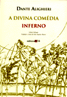
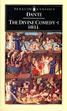
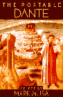
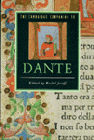

Obras consultadas e fontes de informação na WebNas notas explicativas e textos complementares, indiquei a fonte das informações utilizando a seguinte notação [Autor XX], onde Autor pode ser o autor da obra, a editora (no caso de obras coletivas e enciclopédias), o tradutor/ comentarista, no caso das obras de Dante ou o nome da própria obra, no caso das obras clássicas. XX corresponde aos últimos dois dígitos do ano da publicação. Nas fontes encontradas na Internet não indiquei o ano da publicação por serem fontes dinâmicas. [Mauro 98] Dante Alighieri. A Divina Comédia: Inferno, Purgatório e Paraíso. Tradução e notas de Ítalo Eugênio Mauro. Em português e italiano (original). Editora 34, São Paulo, 1999.  Uma coleção bilíngüe em três volumes com versos em português e no italiano original. A tradução é bastante clara, mesmo preservando a estrutura poética e rimas do original. Uma grande vantagem é o verso correspondente em italiano ao lado da tradução em português. Esta tradução serviu de base para este trabalho (que foi posteriormente revisado com as outras fontes). As notas explicativas esclarecem o significado de personagens históricos e mitológicos mas não se alongam nos detalhes nem tentam interpretar significados ocultos. [Sayers 49] Dante Alighieri, The Comedy of Dante Alighieri the Florentine: Hell (L'Inferno). Translation and notes by Dorothy Sayers. Penguin, EUA, 1949. [Sayers 55] Dante Alighieri, The Comedy of Dante Alighieri the Florentine: Purgatory . Translation and notes by Dorothy Sayers. Penguin, EUA, 1955. Em inglês.  Esta tradução, rimada e em inglês arcaico, apresenta notas explicativas bastante detalhadas, com informações históricas, mitológicas e interpretações da tradutora acerca dos símbolos usados por Dante. As ilustrações e mapas contidos no livro auxiliam na compreensão da geografia do Inferno. A leitura não é tão fácil, por causa do inglês antigo e estrutura irregular das frases, mas os comentários e interpretações da tradutora são ótimos. [Musa 95] Mark Musa, Dante Alighieri. The portable Dante. The Viking Portable Library. Viking Press, EUA, 1995. Em inglês.  Este volume contém toda a Divina Comédia e A Vida Nova (La Vita Nuova) de Dante, com comentários exaustivos sobre personagens, mitologia e sobre a vida literária e política de Dante Alighieri. O tradutor é mais cauteloso nas interpretações simbólicas, evitando impor sua interpretação pessoal ou de comentaristas clássicos como a mais plausível. Esta foi, para mim, a tradução mais compreensível e fácil de ler, provavelmente por não estar limitada pelas imposições da rima, embora mantenha uma estrutura rítmica e a organização em versos. [Cambridge 93] Rachel Jacoff (Org.) The Cambridge Companion to Dante. Cambridge University Press, 1993. Em inglês.  Coleção de 15 ensaios por vários autores sobre Dante, sua vida, sua época, suas relações com o império e a igreja e a política de Florença. Contém também uma introdução às suas obras, uma análise crítica sobre seus comentaristas e sobre traduções de suas obras. [Viglio 70] Salvatore Viglio (Frei Cassiano) Introdução ao Estudo de Dante. Editora Electra, Rio de Janeiro, 1970. Textos sobre a cultura latina, poesia religiosa, época, obra e vida de Dante. Frei Cassiano comenta sobre suas obras e faz uma análise crítica da Divina Comédia, com notas interessantes e imparciais sobre significa-dos alegóricos do poema. [Pinheiro 60] Dante Alighieri. A Divina Comédia. Tradução e notas de J. P. Xavier Pinheiro com prefácio de Raul de Polillo. W. M. Jackson, Rio de Janeiro, 1960. Uma tradução mais antiga da Divina Comédia. Não posso comentar sobre esta tradução pois somente a utilizei como referência. As notas são bastante detalhadas e semelhantes às encontradas na edição de Longfellow (1867). [Longfellow 67] Dante Alighieri. The Divine Comedy traduzida por Henry Wadsworth Longfellow, 1867. Antiga tradução norte-americana. Utilizei principalmente como fonte de notas explicativas (muito detalhadas). Edição eletrônica disponível no sítio do Projeto Gutemberg e em [Elf]. [Elf] 1999 Research Edition for the Divine Comedy . Electronic Literature Foundation, 1999 Este sítio interativo sobre a Divina Comédia é provavelmente o mais completo da Web. Apresenta toda a obra de Dante na edição original em italiano e traduções em ingles, com os cantos numerados por linha. O acesso e pesquisa são facilitados por formulários interativos. Contém imagens de Dali, Botticelli, Doré, Vellutello, mapas de Botticelli, Bartolomeo, Mandelbaum e outros. Pode-se ouvir a leitura dos cantos em inglês e italiano (RealPlayer audio). Estão disponíveis também notas explicativas detalhadíssimas de dois tradutores (em inglês): Henry Wadsworth Longfellow and Rev. H.F. Cary. Organizado e mantido pela ELF - Electronic Literature Foundation [Encarta 97] Microsoft Encarta Enciclopedia 97. CD-ROM interativo (1997) [Larrousse 98] Enciclopédia Larrousse Cultural 98. Folha de São Paulo e Nova Cultural, 1998 [Doré 76] Gustave Doré. The Doré Illustrations for Dante's Divine Comedy - 34 plates. Dover Publications, 1976 Ilustrações da Divina Comédia por Gustave Doré. Dimensões 30 x 23 cm. [Carthage] Dante's Clickable Inferno. Carthage College, 1999. Este sítio contém imagens, críticas, comentários, traduções, resumos e vínculos para várias fontes de pesquisa na Internet sobre Dante Alighieri e suas obras. [HistoryNet] The Historynet.Com Sítio enciclopédico dedicado à história mundial. Contém narrativas de conquistas, batalhas, impérios, líderes, além de mapas e ilustrações. [Roberts 93] J. M. Roberts. History of the World. Oxford University Press, 1993 [Columbia]. Divina Commedia de Dante Alighieri. Columbia University. Repositório público com toda a Divina Comédia (original em italiano) em três arquivos (páginas). [Hofstadter 98] Douglas Hofstadter Le Ton Beau de Marot - In praise of the music of language. Basic Books, 1999. Em um dos capítulos do seu livro dedicado à arte da tradução, Hofstadter comenta sobre a poesia de Dante e faz uma análise crítica de várias traduções de sua obra em língua inglesa. O autor é físico, escritor, tradutor e especialista em inteligência artificial, vencedor do prêmio Pulitzer pelo livro Gödel, Escher, Bach - An Eternal Golden Braid. [NRSV] The Oxford Annotated Bible with the Apocrypha. The New Revised Standard Version (NRSV). Oxford University Press, 1998. [Bíblia] A Bíblia Sagrada - Antigo e Novo testamento. Tradução de João Ferreira de Almeida. Editora Vida, 1990. [Eneida] Virgil (Virgílio). The Aeneid (A Eneida). English translation by Robert Fitzgerald. Everyman's Library, Knopf, 1981 [Ilíada] Homer (Homero). The Iliad (A Ilíada). English translation by Robert Fitzgerald. Everyman's Library, Knopf, 1974 [Odisséia] Homer (Homero). The Odissey (A Odisséia). English translation by Robert Fitzgerald. Everyman's Library, Knopf, 1989 [Metamorfoses] Ovid (Ovídio). Metamorphoses. English translation by A. D. Melville, Oxford University Press, 1986
|